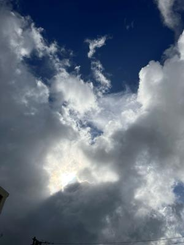
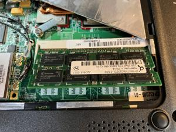
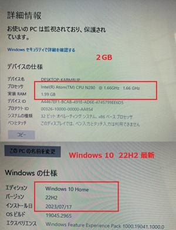
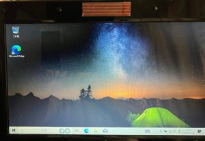
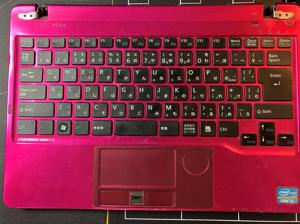

うるがいの話 ある日
最新: メモリを２ＧＢにする【うるがいの話 ある日】とは 一日だけのプログです
『うるがいの話』の最新一日だけのプログで、通信料が少なく経済的だ。カニの画像をクリックすると全ての日付が載る『うるがいの話』サイトを表示します
|
|
【うるがいの話】 うるがい(ｳﾙｶﾞｲ urugai)とは、『もずくがに』の名前でとても大きくなります。 |
|---|---|
|
|
【カミマヤーの話】 猫のことを方言でマヤーといいます。カミマヤー（kamimayaa）とは、神の猫のことです。 |
|
【たながぁの音楽】 たながぁ（ﾀﾅｶﾞｰ tanagaa）とは手長えびのことで、何種類かあり大きいのは車 エビぐらいになります。 |

|
【ぶながぁの話】 ぶながぁ(ﾌﾞﾅｶﾞｰ bunagaa)とは、赤い髪の毛、赤い身体、そして身長は１ｍ２０ｃｍ ぐらい、川の蟹を食べているの目撃された。場所は沖縄県国頭郡大宜味村のと ある村僕の隣近所に住んでいる爺さんから、聞いた話です。 |
|
|
【ギーマの話】 ギーマ(giima)とは、山原の里山に咲くスズランに似た、 花を付けます。実は食べられます、 気が付くと口の周りが紫になっています。 |
2023年07月26日 (水）メモリを２ＧＢにする
15:18
   
７月２０日（木）にヤフーオークションで五百円購入した２ＧＢのメモリが
昨日の夕方、ポストに投函されたいた。夜、早速使ってみるべと入れ替える
がＯＳが立ち上がらない、ヤベヤベ、もともとのメモリに入れ替えるも同じ
であるモヤモヤしながら眠りにつく。オークションを入札する前に、実際の
メモリの形を参考にするため、事前に写真を撮っていた。朝、それをみなが
ら元の１ＧＢのメモリを設定する。ドキドキしながら、電源を入れる。ＯＳ
が無事起動された。そして、２ＧＢに入れ替える。ＯＳ（windowsXP)を
起動させ、メモリが２ＧＢになっていることを確認。そして、内蔵ディスク
を前回中断していたWindows１０のＳＳＤに入れ替えＯＳを起動する。・・
・・少し遅いがあっさり、立ち上がった。どれどれ、プラウザは使えるか？
・・Ｎｉｆｔｙのサイトへいく、ダメだ、全然遅くて。ま、想定内だ。あと
は４ＧＢ、６千円で手に入るが高い。メルカリを調べると半年以上も前に千
五百円で落札されている案件があった。３～４千円だったら購入するかなと。

ところで、子供が２０１２年に事故で中部病院に数か月入院した時に、病室
でもパソコンが出来るように購入したノートパソコン（７月２１日）、２０
１９年に液晶ディスプレイ部分が壊れ、胴体だけになってしまった。試しに
と、外付けのディスプレイに胴体のD-Sub15ピンで接続した。使えた、
このノートパソコンには、オフィス２０１０のエクセルがあり、私が就活活
動した時の履歴書や職務経歴書を作成し、企業に送付したりして利用してい
た。ただし、今やオークションで比較的新しいオフィス製品が５百円程度で
正規に購入できる（ＰＣ１、ＰＣ３もインストール済）。なので廃棄を考え
ていたが、フとWindows11へアップグレードしてみるかと思い立ち昨日、
朝からいじっていた。なぜか、段々調子が悪くなっていく。しまいにはネッ
ト回線速度（Wi-Fi）が極端に遅くなった。これまでだ長い間（１１年間）
お世話になりました、と、メモリとＳＳＤを取り外した。
１５時１１分 ビットコインの総資産 ￥１１、９８５（↓４）